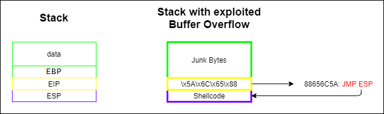

Example 1 (outdated): exploit Buffer Overflow loacally
To exploit a Buffer Overflow we have to:
1. overwrite the data (local vars + EBP) with
junk Bytes2. overwrite the EIP with an address that contain
JMP ESP3. then insert our Shellcode in the position of ESP
